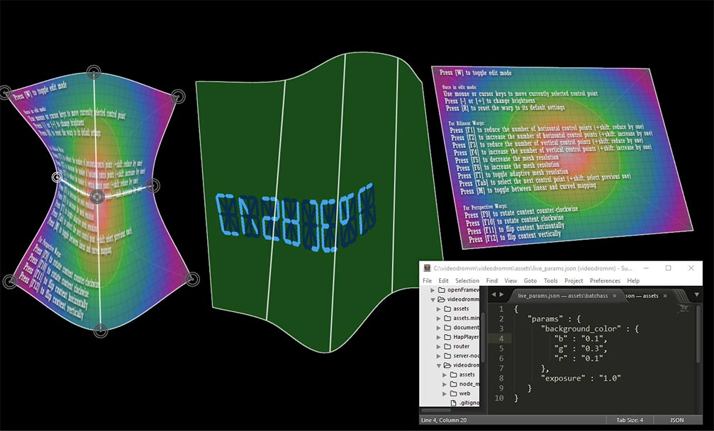

Goal
Create multiplatform applications (win, mac, lnx, android, ios) to do VJing/installations/VR/web
Network enabled, maximum performance, code reuse, open source
Features Live-Coding, Warping
Written in C++, GLSL, Python, typescript, js, etc.
Roadmap
Integrate Glsl editor by adding nodejs websocket server to share: live-coded shaders, uniform variables (need to switch from socket.io to ws)
Integrate The_Force by adding nodejs websocket server to share: live-coded shaders, uniform variables (OSC already supported but to improve)
The main renderer is the visualizer which is controlled remotely a a html5 app in a browser. The goal is to achieve maximum performance by remotely controlling the renderer. The html5 controller needs a UI to act on slider/rotary/color elements which send websocket messages on change events.
Support for loading textures (jpg, png, webp, mp4, gif, audio fft) remotely: all files must be received in a assets folder which is common to html and c++ apps. Cinder apps, which are checkout in folders aside the assets folder, take advantage to use a shared assets folder as Cinder searchs up to 5 parent folders for the assets folder.
Support streaming of webp images across the network (ok for js, need to find a way in c++)
Implement Test Driven Development (TDD): mocha for js, googletest(?) for c++
Prefer json to xml
Use fragment shaders compatible with webGL, keep the syntax from Shadertoy(iResolution, iGlobalTime, iMouse, iChannel0
Option: Support for Open Lighting Architecture
Engines
openFrameworks and Cinder frameworks will be used for the C++ part. For javascript, use typescript, angularjs, nodejs, mongodb, threejs. Other languages can be added to use Unreal Engine, Unity, etc.
Network
OSC and webSockets will be used. The goal is to have a standalone renderer, which can be controlled remotely with
- TouchOsc on mobile/tablet: we stick to TouchOSC default messages like "/1/fader1"
- LiveOSC for Ableton: messages likes "/live/meter"
- Glsl editor
- The_Force
About TouchOsc, here are some screen captures from the Android version with the default layouts we are using
Applications
Several applications will be developed:
- Videodrömm visualizer(C++): standalone renderer for projections/installations
- Videodrömm server(nodejs): webSockets server for multiple websocket clients, routes the json messages from OSC, MIDI, etc
- Videodrömm controller(C++): controller, webSocket client
- Videodrömm (js): controller, webSocket client
- Videodrömm livecoding(C++ or js): editor livecoding of glsl shaders, when they compile successfully, they are sent to the server via webSockets
- Videodrömm vr(C++): vr renderer, using Spout, glsl shaders. We target Oculus DK2, webVR, etc
Assets
Support a variety of file formats:
- Images: jpg, png, gif
- Videos: mp4, mov, preference for image sequence enabled codecs like hap, dxv
- Shaders: fragment shaders (compatible with shadertoy), vertex shaders
- 3D models: obj
- Audio: wav, mp3, ogg
User interface
The UI for C++ will be the excellent Immediate Mode GUI: imgui from Omar Cornut
Other UI could be used depending on the programming language.
Audio
Support audio analysis from linein, wave files, Ableton Live via LiveOsc ("/live/track/meter")
Wave file playback possible
Hardware input
The application can be controlled with several hardware devices:
- Kinect
- LeapMotion
- MIDI controller
- Mobile/Tablet: accelerometer, gyroscope, UI
- iot: raspberry pi, arduino
Output
Standard output is rectangular full screen, by defaut. Using warping techniques, several inputs can be mixed and mapped to non-rectangular areas/objects
The application outputs to:
- Projector
- Screens
- VR devices
- Mobile/Tablet
Git workflow
Get involved! Design, advice, development...
The projet source is hosted on github, in several repositories. To compile the projects without modifications you can just clone the desired projects. If you want to contribute, I suggest the following workflow:
- Fork the project
- Clone your fork
- Configure the link to the parent repo: git remote add upstream git://github.com/videodromm/documentation.git
- Before coding, get latest modifications from the parent: git fetch upstream and git merge upstream/master master
- Do some coding
- Commit and push to your repo
- Do a pull request for review and integration in the parent repo
- Relax/eat/sleep, then when you're back to coding fetch and merge as before...
To setup the development environment, click here
Other software integration
Other software can interact with videodrömm, we keep the door open for integrations via Spout/Syphon/OSC/etc:
- pure data
- super collider
- videopong
- vvvv
- max for live/max msp
- lpmt
- air/flash player apps
- touch designer
- etc